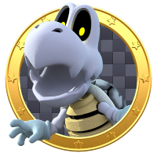

Selecione um Personagem
-

-

- 
Mario
Herói do Reino dos Cogumelos, A principal habilidade do personagem consiste em consumir itens para alterar sua forma. Por exemplo, ele consegue aumentar de tamanho ao comer certos cogumelos e atirar bolas de fogo ao coletar flores especiais.